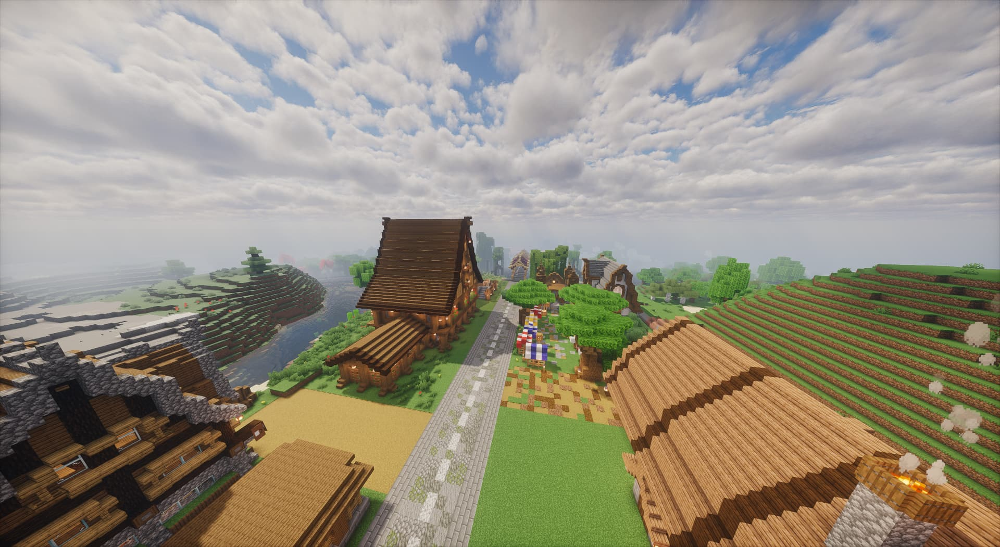
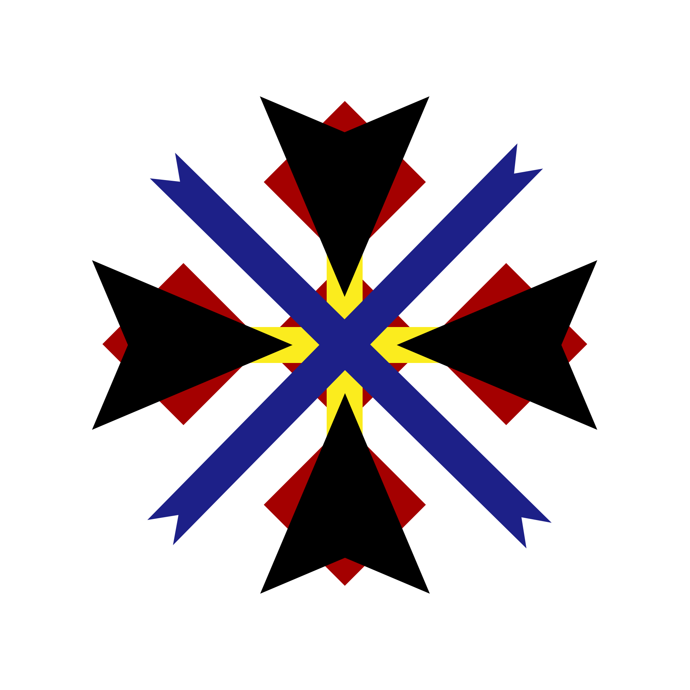
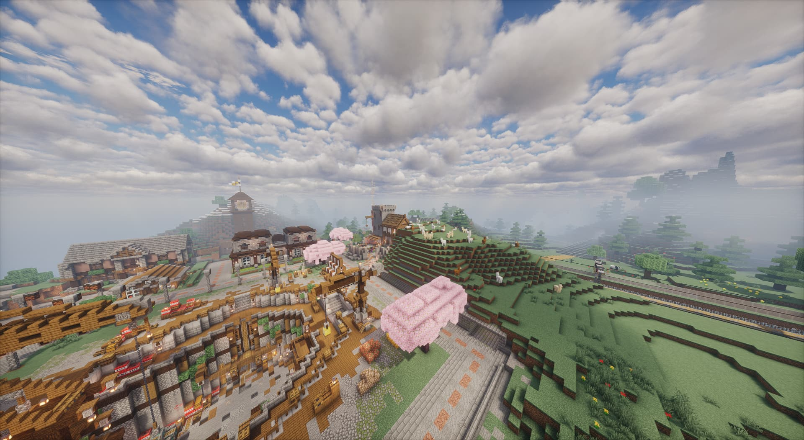
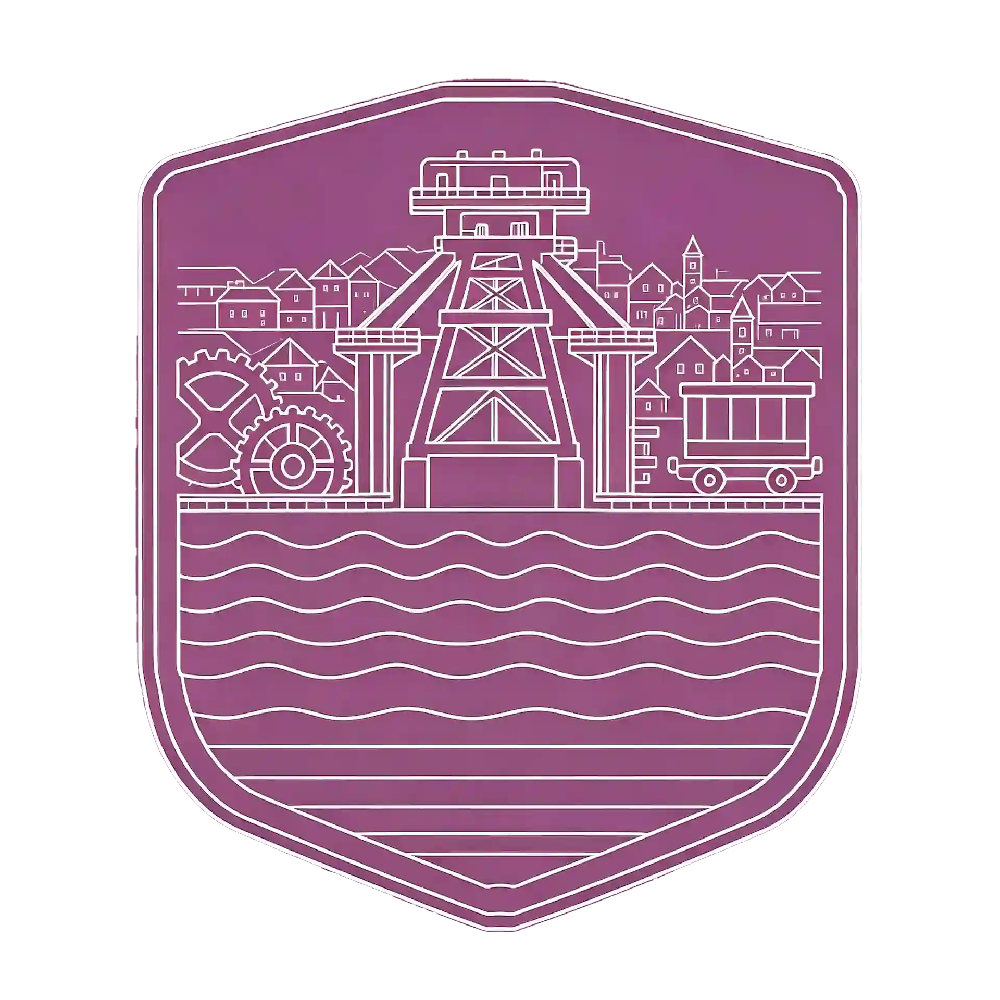
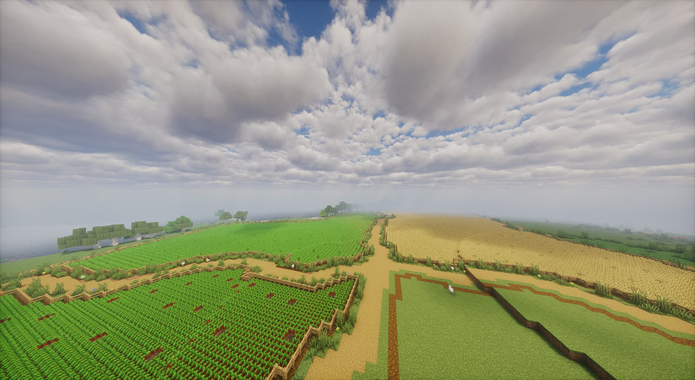
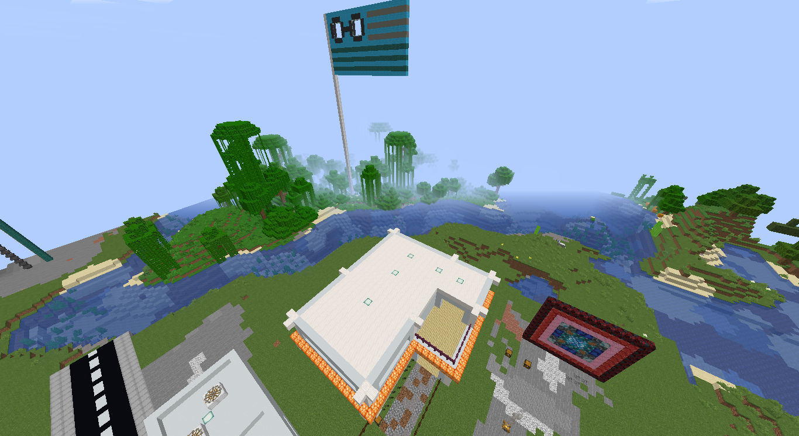

03三大分区
01一处前哨站
SCROLL TO EXPLORE THREE REGIONS, ONE SHARED WORLD
三大分区 · 各展所长
居住、工业、农林三种功能，
在同一座新区中协同发展。
01 / 03

东台莱德
居住生活 · 城市配套

02 / 03
采矿小镇
矿产开采 · 工业生产

03 / 03林沃森
农林生产 · 田园生活
眼镜岛作为前哨站独立展示，不计入三大分区。前往眼镜岛
01 / 03 · DONGTAI RYDER
东台莱德
居住生活 · 城市配套
新区继主城区之后的重要居住片区。围绕居住、商业与公共服务展开建设，以道路联通城区，用公园和街巷承接日常生活。
- 居住空间与社区建设
- 商业街区与居民服务
- 道路衔接与公园绿地
02 / 03 · MINING TOWN
采矿小镇
矿产开采 · 工业生产
又名新特斯沃，是新区矿产与工业生产的重要片区。连接矿场、分拣冶炼、仓储与货运，为新区建设提供原料和生产支撑。
- 露天矿场与地下开采
- 矿产分拣与冶炼加工
- 原料仓储与货运衔接
03 / 03 · LINWOSEN
林沃森
农林生产 · 田园生活
新区农林与生活物资的主要产区。连片农田、养殖和加工设施依托河流水系与灌溉网络，在生产之外，保留乡村聚落与田园风景。
- 农林种植与畜牧养殖
- 灌溉系统与农产加工
- 乡村聚落与田园休闲
OUTPOST / EYEGLASS ISLAND
前哨站眼镜岛
在海岸之外，守望与连接。
位于新区东部近海的岛屿，与林沃森通过桥梁联系，承担与眼镜国接壤区域的对外联络及边界守望职能。它是新区的一处前哨站。
- 对外联络
- 海岸守望
- 桥梁连接

REGION UPDATES
建设动态
KEEP EXPLORING